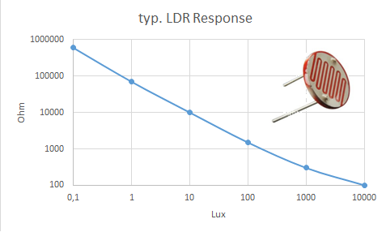
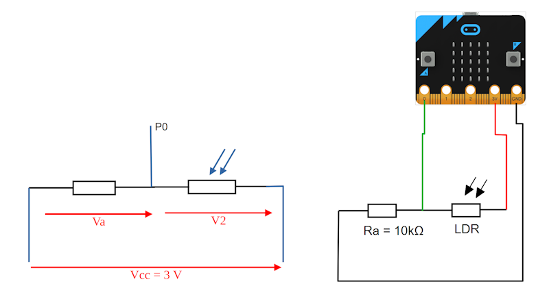
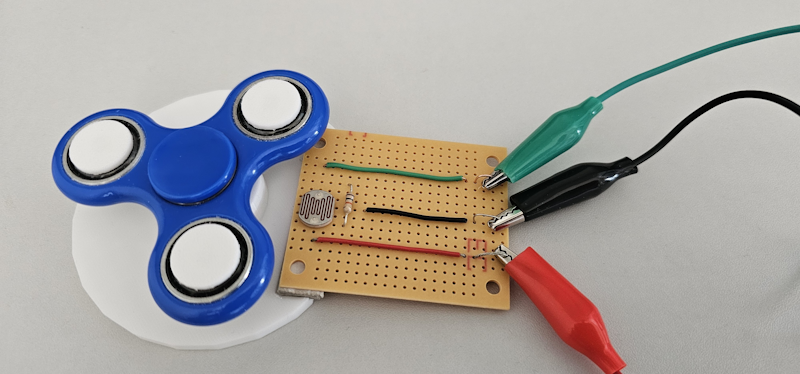
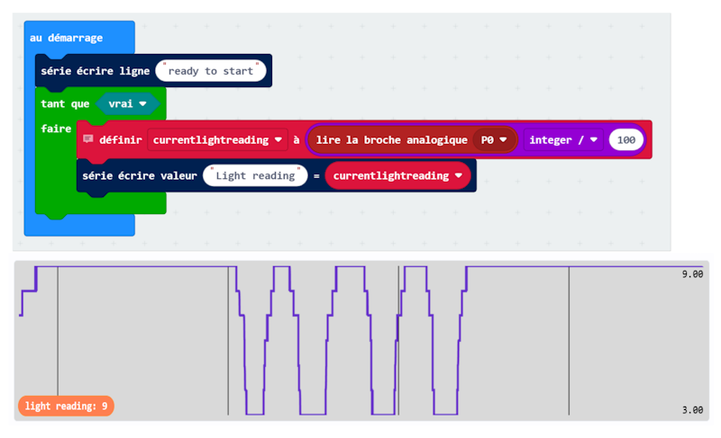
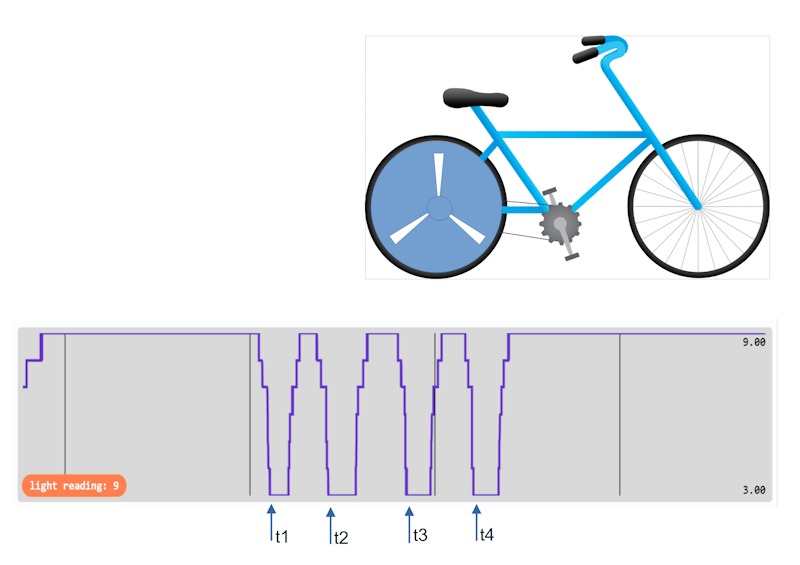
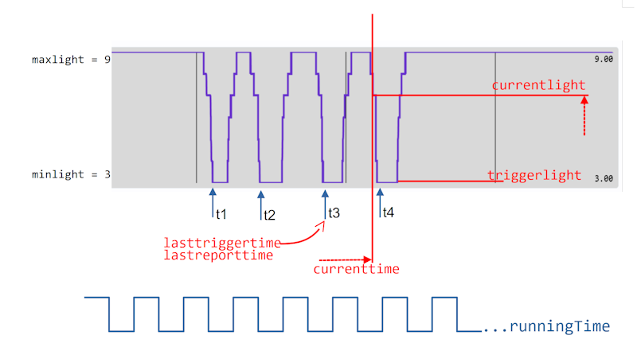
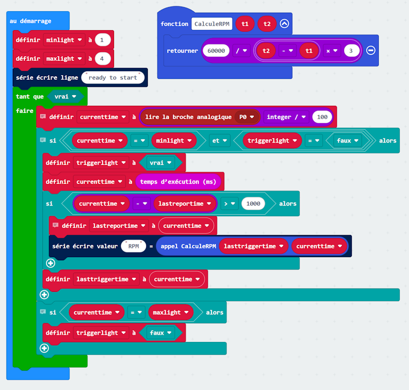
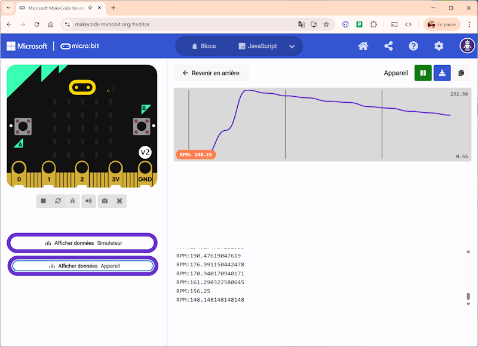

Mesurez une vitesse RPM
1. Principes électriques de la LDR
Lumière (Lux)
R2 (Ω) 0,1 1000 000 1 90 000 10 10 000 100 1 200 1000 500 10 000 100 
Conclusion : La valeur de R2 diminue lorsqu'il y a augmentation de lumière. R2 sera comprise entre 1000 kΩ et 0,1 kΩ
2. Étude du Montage utilisé pour notre projet
Soit le montage suivant avec un microcontrôleur , une résistance Ra de 10k Ω et une photorésistance LDR. Le schéma de principe correspondant au montage.

VP0 = Va = Vcc - V2
V2 = R2.i V2 + Va = Vcc R2.i + Ra.i = 3 i.(R2+Ra) = 3 i = 3 / (R2+Ra)
V2 = R2. 3 / (R2+Ra)
VP0 = Vcc – V2
VP0 = 3 - 3. R2 / (R2+Ra)- A l'aide des valeurs de R2 déterminées précédemment, calculez la valeur de VP0 dans le noir.
Dans le noir R2 = 1000 kΩ
VP0 = 3 - 3 x 1000 / 1010
VP0 = 3 - 2,97
VP0 = 0,03- Calculez la valeur de VP0 en pleine lumière. En pleine lumière
R2 = 0,1 kΩ
VP0 = 3 - 3 x 0,1 / 10,1
VP0 = 3 – 0,029
VP0 = 2,971
Conclusion : Ainsi notre microcontrôleur va recevoir en entrée sur P0 des valeurs directement proportionnelles à la lumière captée par la LDR, sur une échelle de 0 à 3 Volts.
3. Capter le signal, calibrer les niveaux
Dans ces conditions on peut tester le montage, le premier programme doit simplement permettre de voir le signal qui entre sur P0.

7-Fidget-Spinner-Light-calibration.hex
currentlightreading = 0
minlightvalue = 3
maxlightvalue = 9
serial.write_line("ready to start")
while True:
# Récupérer la valeur actuelle, puis la diviser par un nombre permettant
# de la ramener à un chiffre (ici, une division par 100) ; cela facilite la
# détection des valeurs de luminosité élevées et faibles, car il y a moins
# de paliers de niveau lumineux
currentlightreading = Math.idiv(pins.analog_read_pin(AnalogReadWritePin.P0), 100)
serial.write_value("Light reading", currentlightreading)

https://makecode.microbit.org/S55542-11470-73345-77039
Ici avec la lumière ambiante aujourd'hui, le signal sur P0 vaut 3 dans le noir et 9 dans la lumière. Ainsi, pour la suite du programme on pourra définir les variables : minlight à 3 maxlight à 9
4. Déterminer une vitesse de rotation RPM (trs/min)
Ce montage sera tout à fait adapté à la mesure de vitesse si on considère la roue arrière du vélo avec un disque plein de couleur noire, avec 3 fentes. Lorsque la roue tourne, le disque masque la lumière, sauf au moment ou la fente laisse passer la lumière. Cela arrive 3 fois par tour.

On détecte les fronts descendants aux temps t1 puis t2 (t2 - t1) correspond à la durée entre deux passages d'une fente à la suivante (en ms) ainsi 3x(t2-t1) correspond à la durée pour faire un tour de roue (en ms) La roue fera 1 tour pour 3 x ( t2 – t1 ) millisecondes La roue fera combien de tours pour 1 minute ? Ce nombre de tours pour 1 minute correspond à la vitesse RPM !
1 tour → 3 x ( t2 – t1 ) ms
? tours → 1min = 60 000 ms
RPM = 60 000 x 1 / (3 x ( t2 – t1 ) )
# on défini une fonction pour le calcul de la vitesse de rotation
def CalculeRPM(t1: number, t2: number): return Math.round(60000 / ((t2 - t1) * 3))
5. Programme complet

On met en place un ensemble de variables pour notre programme, et on les initialise :
currenttime = 0 # Variable pour stocker le temps t
currentlight = 0 # Stocke la lecture du capteur au temps t
lasttriggertime = 0 # Mémoire du temps du dernier front descendant
lastreportime = 0 # Mémoire de la dernière fois qu'on a affiché le résultat
triggerlight = false # Niveau de lumière de déclenchement atteint, oui ou non
minlight = 3
maxlight = 97-Fidget-Spinner-RPM.hex
# on défini une fonction pour le calcul de la vitesse de rotation
def CalculeRPM(t1: number, t2: number):
return Math.round(60000 / ((t2 - t1) * 3))"""
Fidget Spinner RPM
"""
lasttriggertime = 0
lastreportime = 0
currenttime = 0
triggerlight = False
currentlight = 0# on met les valeurs minlight et maxlight issues du calibrage précédent
minlight = 3
maxlight = 7# Message pour dire que le programme commence
serial.write_line("ready to start")
# la boucle forever est trop lente, on va utiliser une boucle
while True:# lire la valeur sur P0 et diviser par 100 ,
# cela arrondi les valeurs et facilite la détection du niveau haut et bascurrentlight = Math.idiv(pins.analog_read_pin(AnalogReadWritePin.P0), 100)
# vérifier si la lumière est descendue à une plus basse valeur
# après avoir été à une plus haute valeur
# cela élimine ou diminue le risque de faux positifsif currentlight == minlight and triggerlight == False:
triggerlight = True
currenttime = input.running_time()
if currenttime - lastreportime > 1000:# écrire le résultat une fois par seconde,
# pas plus, sinon serial.write ralenti beaucoup troplastreportime = currenttime
serial.write_value("RPM", CalculeRPM(lasttriggertime, currenttime)) lasttriggertime = currenttime# vérifier si la lumière atteint la plus haute valeur
# et si c'est bien le cas, mettre triggerlight à FALSE.
# Ainsi on est prêt à détecter la prochaine valeur la plus basse.
if currentlight == maxlight:
triggerlight = False


https://makecode.microbit.org/S41026-06439-08106-82173
Techno-Jardel 2026
D'après une idée originale de MicroMonsters - Episode 16 - micro:bit Fidget Spinner Speed Test